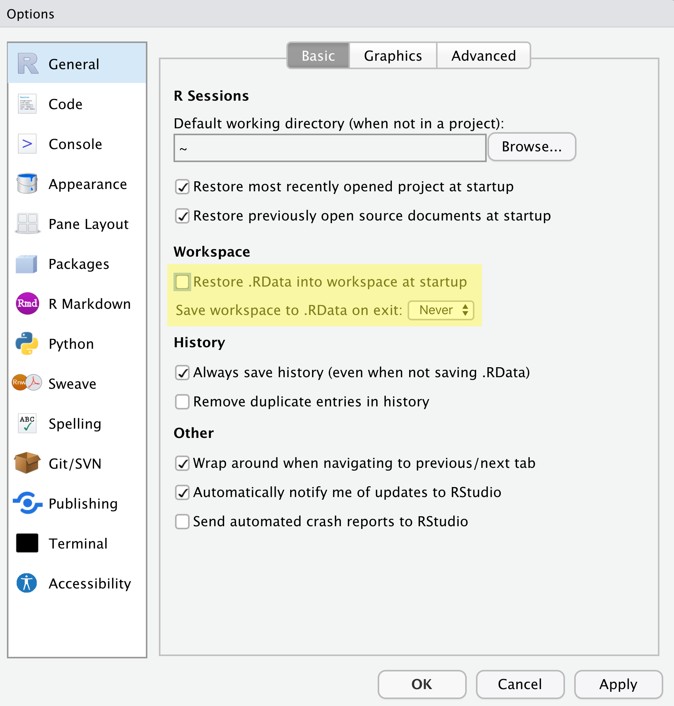
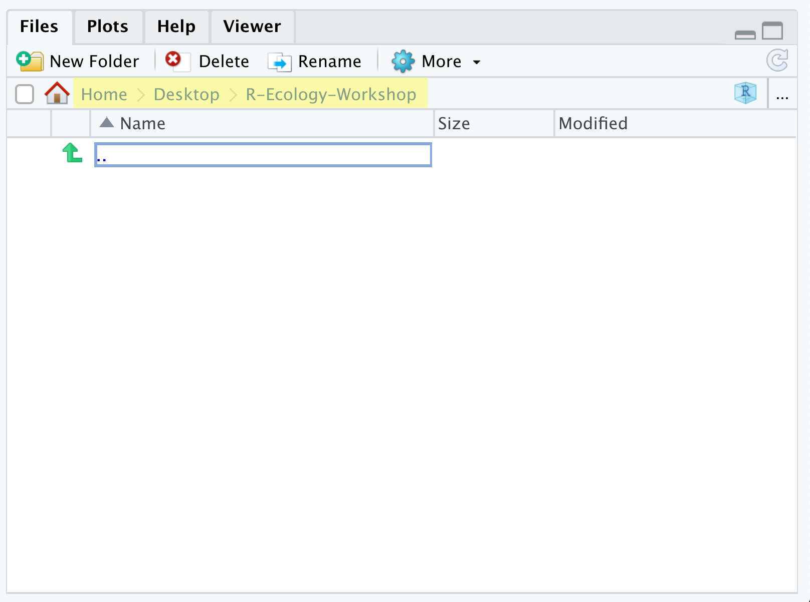

install.packages(c('readr', 'dplyr', 'ggplot2', 'stringr',
'lubridate', 'here',
'sf', 'mapview'))Setup local computer
If you want to install the code, data, and software on your on own computer, follow these steps.
Install R and RStudio
R and RStudio are two separate pieces of software:
- R is a programming language and software used to run code written in R.
- RStudio is an integrated development environment (IDE) that makes using R easier. In this course we use RStudio to interact with R.
If you don’t already have R and RStudio installed, follow the instructions for your operating system below. You have to install R before you install RStudio.
For Windows
- Download R from the CRAN website.
- Run the
.exefile that was just downloaded - Go to the RStudio download page
- Under Installers select Windows Vista 10/11 - RSTUDIO-xxxx.yy.z-zzz.exe (where x = year, y = month, and z represent version numbers)
- Double click the file to install it
- Once it’s installed, open RStudio to make sure it works and you don’t get any error messages.
For MacOS
- Download R from the CRAN website.
- Select the
.pkgfile for the latest R version - Double click on the downloaded file to install R
- It is also a good idea to install XQuartz (needed by some packages)
- Go to the RStudio download page
- Under Installers select Mac OS 13+ - RSTUDIO-xxxx.yy.z-zzz.dmg (where x = year, y = month, and z represent version numbers)
- Double click the file to install RStudio
- Once it’s installed, open RStudio to make sure it works and you don’t get any error messages.
For Linux
- Download R from the CRAN website.
- Select the
.pkgfile for the latest R version - Double click on the downloaded file to install R
- It is also a good idea to install XQuartz (needed by some packages)
- Go to the RStudio download page
- Under Installers select Your Version of Linux - RSTUDIO-xxxx.yy.z-zzz.dmg (where x = year, y = month, and z represent version numbers)
- Double click the file to install RStudio
- Once it’s installed, open RStudio to make sure it works and you don’t get any error messages.
Update R and RStudio
If you already have R and RStudio installed, first check if your R version is up to date:
- When you open RStudio your R version will be printed in the console on the bottom left. Alternatively, you can type
sessionInfo()into the console. If your R version is 4.0.0 or later, you don’t need to update R for this lesson. If your version of R is older than that, download and install the latest version of R from the R project website for Windows, for MacOS, or for Linux - It is not necessary to remove old versions of R from your system, but if you wish to do so you can check How do I uninstall R?
- After installing a new version of R, you will have to reinstall all your packages with the new version. For Windows, there is a package called
installrthat can help you with upgrading your R version and migrate your package library. A similar package calledpacmancan help with updating R packages across To update RStudio to the latest version, open RStudio and click onHelp > Check for Updates. If a new version is available follow the instruction on screen. By default, RStudio will also automatically notify you of new versions every once in a while.
Note
The changes introduced by new R versions are usually backwards-compatible. That is, your old code should still work after updating your R version. However, if breaking changes happen, it is useful to know that you can have multiple versions of R installed in parallel and that you can switch between them in RStudio by going to Tools > Global Options > General > Basic.
While this may sound scary, it is far more common to run into issues due to using out-of-date versions of R or R packages. Keeping up with the latest versions of R, RStudio, and any packages you regularly use is a good practice.
Install R packages
During the course we will need a number of R packages. Packages contain useful R code written by other people.
To try to install these packages, open RStudio and copy and paste the following command into the console window (look for a blinking cursor on the bottom left), then press the Enter (Windows and Linux) or Return (MacOS) to execute the command.
R will display a messag in the console: “Do you want to proceed? [Y/n]:”
Type “Y”, and hit enter / return.
R tries to download and install the packages on your machine.
When the installation has finished, you can try to load the packages by pasting the following code into the console:
library(readr)
library(dplyr)
library(ggplot2)
library(stringr)
library(lubridate)
library(here)
library(sf)
library(mapview)If you do not see an error like there is no package called ‘...’ you are good to go!
Organizing your project folder
It is a good practice to organize your projects into self-contained folders. Your project should start with a top-level folder that contains everything necessary for the project, including data, scripts, and results, all organized into subfolders.
- Start RStudio (you should see a view similar to the screenshot above).
- In the top right, you will see a blue 3D cube and the words “Project: (None)”. Click on this icon.
- Click New Project from the dropdown menu.
- Click New Directory, then New Project.
- Type out a name for the project.
- Put it in a convenient location using the “Create project as a subdirectory of:” section. We recommend your
Desktop. You can always move the project somewhere else later, because it will be self-contained. - Click Create Project and your new project will open.
When you need to work on the project, click on the Rproj icon to start RStudio.
There are a few settings we will need to adjust to improve the reproducibility of our work. Go to your menu bar, then click Tools → Global Options to open up the Options window.

Make sure your settings match those highlighted in yellow. We don’t want RStudio to store the current status of our R session and reload it the next time we start R. We want to start with a clean, empty R session every time we work.
We will use a basic structure for this workshop.
project_name
│
└── data
│ └── cleaned
│ └── raw
│
└─── results
│
└── scripts
│
└── project_name.RprojLet’s start making our new folders. Go to the Files pane (bottom right), and check the current directory, highlighted in yellow below. You should be in the directory for the project you just made. You shouldn’t see any folders in here yet.

Next, click the New Folder button, and type in scripts to generate your scripts folder. It should appear in the Files list now. Repeat the process to make your data, and results folders. Then, click on the data folder in the Files pane. This will take you into the data folder, which will be empty. Use the New Folder button to create raw and cleaned folders. To return to the project folder, click on it in the file path, which is highlighted in yellow in the previous image. It’s worth noting that the Files pane helps you create, find, and open files, but moving through your files won’t change where the working directory of your project is.